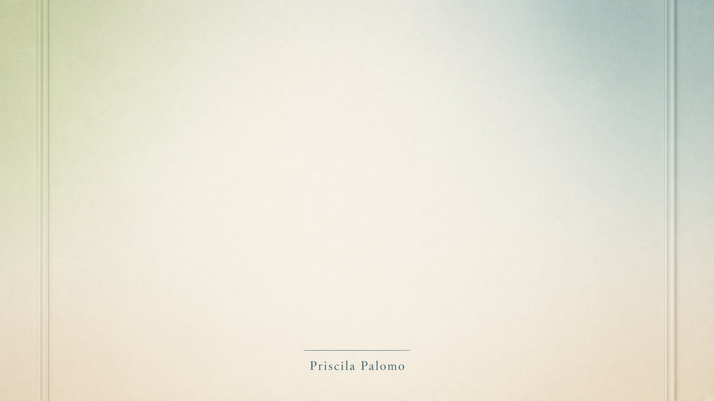

Baixar o fundo das sessões
Clique no botão preto. O arquivo vai para a pasta Downloads. No celular, pressione a foto e escolha Salvar imagem.

No Zoom: Configurações → Fundo e efeitos → + Adicionar imagem →
escolha o arquivo Priscila-Palomo-fundo-zoom.jpg na pasta Downloads.
A imagem preenche a tela toda (1920×1080).